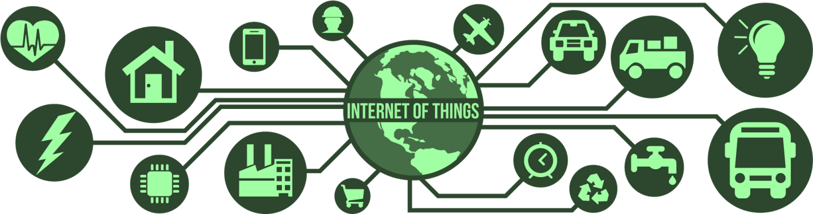

Internet de las cosas#
¿Qué es IoT?#
{kind=link}
Fig. 1 imagen tomada de https://www.flaticon.es/iconos-gratis/computadora#
Internet de las cosas (IoT - Internet Of Thing) hace referencia a los dispositivos físicos u objetos que se conectan e intercambian información a través de redes de comunicación como internet. En esta definición, se debe hacer una salvedad en a qué hace referencia “cosas” en el nombre, esto porque, a partir de lo declarado sería válido decir, por ejemplo, que una instalación de equipos de cómputo ordinarios conectados a través de una red local satisface las condiciones para representar un sistema IoT (Fig. 1). Sin embargo, las “cosas” en este contexto siempre querrán hacer referencia a objetos o dispositivos que comúnmente no están asociados con internet o algún tipo de comunicación por red.
Con esto en mente, el objetivo en este campo es equipar estas “cosas” con sensores, software y tecnología de red para conectarlos, configurarlos y controlarlos, recopilando y transmitiendo datos a través, principalmente, pero no restringido, de internet.
En el contexto mundial, la implementación de las tecnologías IoT tiene un gran potencial de transformar la forma en que las personas interactúan con el mundo físico y cómo las empresas operan y toman decisiones. Esto, porque los datos que se recopilan pueden ser analizados y utilizados para crear soluciones inteligentes y automatizadas, como la optimización de procesos de producción de una empresa, el monitoreo de la salud y el bienestar, la gestión de inventarios, la seguridad del hogar, entre otros.
La tecnología subyacente a conocer para embarcarse en IoT incluye la programación y adaptación de hardware, la conectividad de red, la computación en la nube, la inteligencia artificial y la analítica de datos.
Etapas#
Un sistema IoT involucra varias etapas o procesos, que van desde la elección e implementación del hardware hasta la visualización y análisis de los datos obtenidos del sistema. De forma general se puede dividir el sistema en 3 etapas que involucran procesos relacionados con: La adquisición, el procesamiento y almacenamiento de la información, el uso de APIs y servicios gestores del sistema, y la implementación de aplicaciones que hagan una interfaz entre los dispositivos y el usuario.